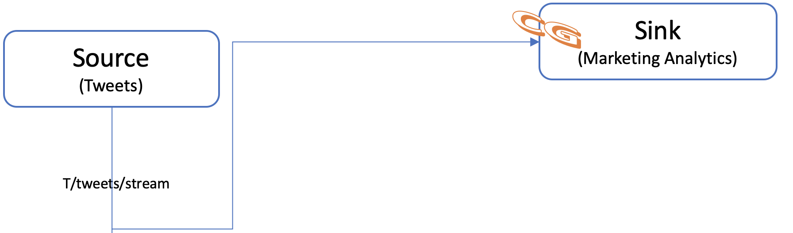
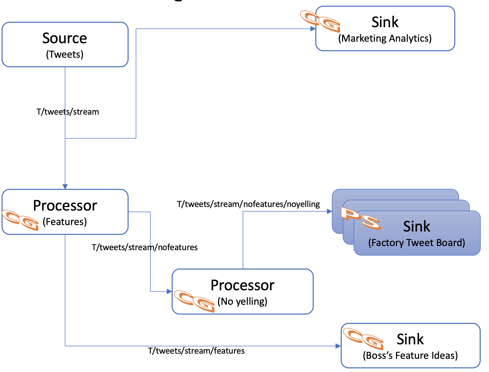
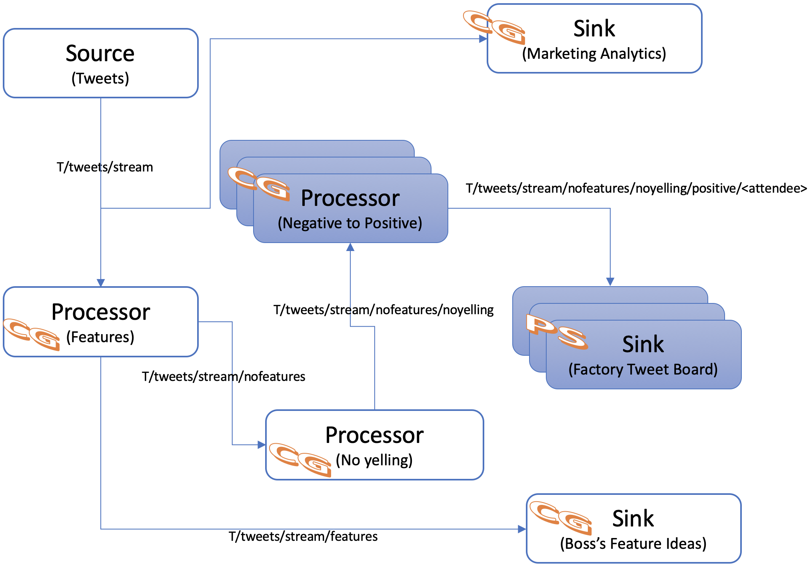

Using Java & Spring Cloud Streams (SCS) to create Event-Driven Applications with PubSub+
- The purpose of this codelab is to introduce java developers to creating event-driven applications with Spring Cloud Streams and PubSub+
- "Spring Cloud Stream is a framework for building highly scalable event-driven microservices connected with shared messaging systems."
- It is based on Spring Boot, Spring Cloud, Spring Integration and Spring Messaging
You're a developer that works for an up and coming car company named Edison Automotives. Your boss is not the most adept in the use of social media but he's been hearing great things about twitter from his inner-circle and is a bit infatuated with tying it into Edison Automotive's every day business and culture....little does he know that his company does not exactly have the best products or reputation....
TODO: INSERT INTRO STORY
TODO: INSERT LAB ARCHITECTURE DIAGRAM?
- Boss - Glad you made it into work today! Go get setup since we've got a lot of work to do!
- Developer - Yep, I'll have everything up and running in 20 minutes or so.
Developer IDE & Code Access
IDE Setup
The recommended IDE for the workshop is Spring Tools Suite (STS) Download Here. STS comes with some niceties, such as autodeploy, when used with spring-boot-devtools. Participants can of course use another IDE if preferred. It is also recommended that you begin the workshop with an empty STS workspace to avoid any unforeseen issues with existing projects/configurations/code.
Required libraries:
- Use the latest JDK 1.8 (ensure your PATH & JAVA_HOME are updated as needed)
- Maven 3.5.3 or higher (ensure it's on your PATH) Install steps here
Code Access
- Clone the github repo TODO - Add real repo & branch info
$ git clone git@github.com:Mrc0113/solace-workshop-scs.git - Import the projects into STS
In STS, use the File -> Import -> Maven -> Existing Maven Projects -> Click Next -> Click Browse and Navigate to the git repo you cloned in the previous step -> Select all the pom files and click Finish.
After importing everything you should see the following projects in STS:
- scs-processor-feature
- scs-processor-positive
- scs-processor-yelling
- scs-sink-analytics
- scs-sink-bossideas
- scs-sink-twitterboard
- scs-source-tweets
- scs-workshop-common
- spring-boot-mspring-boot-mqttwebapp/manifest.ymlqttwebapp
Throughout this workshop we have two options when deploying apps: 1) via the Spring Tool Suite IDE and 2) via mvn on the command line. If you are going to choose option 2 then navigate to the scs-workshop-common directory and perform a maven install of the project.
$ cd ~/git/solace-workshop-scs/scs-workshop-common/
$ mvn install
Create and/or Verify access to a Solace PubSub+ Access
PubSub+ Service in Solace Cloud
If you want to stand up your Solace PubSub+ Service in Solace Cloud go ahead and login or signup at the Cloud Signup Page. Note that a free tier is available and will work for this workshop.
Local Solace PubSub+ Instance
When developing your application, you may want to test using a local instance of the Solace PubSub+ Event Broker. Refer to the Solace Docker Getting Started Guide to get you up and running quickly with a broker instance running in Docker. You may skip this step if you decide to use a broker running in PCF or Solace Cloud.
Consider removing PCF in this version and adding in the PCF branch only
Solace PubSub+ Service in Pivotal Cloud Foundry (PCF)
If you are using PCF, your administrator will have created an org and space for your workshop demo in which you can deploy and run your microservices. Moreover, a Solace PubSub+ service instance will have been created so that it can be bound by any app running in the space and automatically lookup credentials to connect to a broker instance running in PCF. You should determine the name of this service instance before deploying or running your application to avoid any service binding errors. You can do this through the Apps Manager or via the cf CLI.
$ cf services
Getting services in org test-org / space development as user1...
name service plan bound apps
solace-pubsub-service solace-pubsub Enterprise Shared Plan sample-app
- Boss - The marketing department wants to use the tweets to learn more about our customer's thoughts. Since you're already getting them can you share them with marketing?
- Developer - That's Possible! Tell them to give me a call! TESTING
Application Architecture
At the end of this section we will have created the apps below!
The Source will send out tweets that are received by the marketing Sink.

Deploying a Source
Before our company can do anything with the tweets we have to start to receive an incoming stream of them! Let's get started! Please navigate to the "scs-source-tweets" project in your IDE.
Learn the Project Structure
Before we take a look at the code, let's take a quick look at the structure of a Spring Cloud Streams project.
- As a java developer you'll probably see a familiar project setup. You have your main application under src/main/java and unit tests under src/test/java.

Negative
DiagramFifth-windows.png: Spring Cloud Streams is built on top of Spring Boot. A great resource for creating your own Spring Boot applications is Spring Initializr. A publically hosted version is hosted here: start.spring.io
- Next go ahead and open up the pom.xml file in your "scs-source-tweets" project and search for "binder"; you should have found the "spring-cloud-stream-binder-solace" which is what is going to allow SCS to connect to Solace PubSub+
TODO UPDATE DIAGRAM BELOW
- Let's take a look at a simple sample implementation in the image below. You can see that the enrichLogMessage method is associated with both an INPUT and OUTPUT channel. In a future section we will create an application following a similar pattern, but notice that if you look at the ScsSourceTweets.java class in your "scs-source-tweets" project you will see something a bit different. We are using an @InboundChannelAdapter annotation in order to create tweets at a fixed rate.

- One last thing to look at and then we'll deploy your first source! Go ahead and open your application.yml file. This file holds the bindings that tells the SCS binder how to connect your input/output channels to the specified middleware at runtime.

Deploy our scs-source-tweets app
- First open the application.yml file and update the host, msgVpn, clientUsername & clientPassword to match your PubSub+ environment. When obtaining the connect info note that the SCS solace binder uses the Solace Java API with the SMF protocol. (Keep this connection info handy as you'll need it several more times throughout this lab!)
- If using STS, start the app by right clicking on the project and choosing "Run As" -> "Spring Boot App"
- If not using STS, open a cli and navigate to the project's directory and then run
$ mvn spring-boot:run - Whichever way you started the app you should see the app start, connect and begin to send tweets by looking at the console.
- Developer - Awesome! Now we have a stream of tweets coming in!
- Developer - As marketing requested we just need to capture them so they can perform their analytics.
To do this we will deploy a sink app. Recall that a sink app binds to an INPUT channel.
Deploying a Sink
- Open the "scs-sink-analytics" project
- Take a look at the code in the ScsSinkAnalytics.java class; you'll notice we have a very simple class with only a few methods. As we saw earlier, the @StreamListener attribute identifies which channel our sink method will receive events from. Also notice that the sink method is expecting a POJO tweet parameter of type Tweet
- Now update the application.yml file for the "scs-sink-analytics" project with the same info that you used when deploying the source app.
- Time to deploy! Deploy the "scs-sink-analytics" app the same way you started "scs-source-tweets"
- Now that your sink is started you should see it logging the tweets as they come in!
- Developer - Woohoo! We've deployed our first SCS source and sink applications and the marketing department is now getting the stream of tweets as they requested! Time to give our boss the good news.
- Boss - Hey Tweet Master, I'm loving this twitter thing my buddy told me about! I want our LED ribbon around the factory floor to become a "Tweet Board" and show all the tweets about our awesome vehicles. The factory team members are going to love it!
- That's Possible! I'll get right on it – give me a half hour.
Application Architecture
At the end of this section we will have added the Factory Tweet Board Sink.

Creating the Tweet Board Sink
We obviously don't have a giant LED board that we can use so we're going to settle for logging the tweets as they come in.
- Open the "scs-sink-twitterboard" project
- Open the ScsSinkTweetBoard.java class
- Add the @EnableBinding(Sink.class) annotation to label the app as a Sink
- Add a "sink" method that takes in a "Tweet" POJO from the INPUT channel and logs that it was received.
- Update the application.yml file, verify that there is indeed a destination configured for the input channel, and add your name to the end of the destination name (e.g: TWEETS.Q.BOARD.Marc). Note that by not specifying a group we are using the "Publish-Subscribe" messaging model.
- If not deploying to PCF you'll also need to update the host, msgVpn, clientUsername, clientPassword in the application.yml file.
Deploying the Tweet Board
At this point we have created our "scs-sink-twitterboard" application and it needs to be deployed.
Time to see if you've been paying attention! Deploy it in the same way you deployed the apps in the previous section.
- Developer - Well that was easy! I'm loving our event-driven architecture!
So far in this workshop we have created source or sink applications. In this section we will create our first processor.
- Hey Tweet Master, I've got a problem with your work! This twitter board is letting employees take credit for all the customer's ideas. I want to send the new feature tweets to my private page instead of the "Tweet Board." Can you fix it?
- That's Possible! I'll do it right away – should be ready in 30 minutes.
Application Architecture
In order to meet our new goal we will add the Features processor and a new Sink as seen below.

Create the Feature Processor
- Developer - Let's get started!
Processor with a Custom Binding Interface
- Open the "scs-processor-feature" project
- Note that we have the same project setup as the source and sink apps from the previous section and the pom file doesn't have any extra dependencies to create a Processor.
- Now open the ScsProcessorFeatures.java class.
- Note that our @EnableBinding Annotation is specifying the ProcessorOneInTwoOutBinding class; this is because we have specified a custom interface to have 2 output channels (one for tweets with features, and one for all other tweets)
- Go ahead and update the host, msgVpn, clientUsername, clientPassword in the application.yml file; also note that the bindings that are listed include input, outputFeature, and outputNoFeature as defined in our custom bindings interface.
- Deploy the app in the same manner that you've been deploying the others.
Processor using Dynamic Destinations
- Let's create a second feature processor that makes use of dynamic destinations.
- Open the ScsProcessorFeaturesDynamic.java class
- You'll notice that the @EnableBinding annotation does not explicitly specify a binding interface. Instead we are using a BinderAwareChannelResolver which is registered automatically by the @EnableBinding annotation. This destination resolver allows us to dynamically create output channels at runtime.
- Review the handle method to see an example of how to specify dynamic destinations
- Open the pom file and update the "start-class" property to point to our ScsProcessorFeaturesDynamic class
- Deploy the app
Create the Feature Sink for the Boss
- Open the "scs-sink-bossideas" project
- Open the ScsSinkBossideas.java class
- Add the @EnableBinding(Sink.class) annotation to label the app as a Sink
- Add a "sink" method that takes in a "Tweet" POJO from the INPUT channel and logs that it was received.
- Update the application.yml file and verify that there is indeed a destination & group configured for the input channel. Note that by specifying a group we are now using the consumer group model. Since this application will likely do further processing in the future we want to provide the option of scaling up to keep up with the number of events that come in.
- At this point we have created our "scs-sink-bossideas" application and it needs to be deployed. Time to see if you've been paying attention! Deploy it in the same way you deployed the apps in the previous section.
Update the Tweet Board Subscription
Note that our processor that we created earlier in this lab publishes to multiple topics essentially splitting our feed into two. Due to our new requirements to not show new features on the twitter board we need to update that sink appropriately.
- Navigate to your "scs-sink-twitterboard" project
- Open your application.yml file
- Update the queueAdditionalSubscriptions property to listen on "T/tweets/stream/nofeatures"
- Save the file
- If you are using STS you should notice that the application automatically redepoyed; that's because of the auto deployment feature provided by spring-boot-devtools
- If you are not using STS please stop your running app and redeploy.
- Boss - "Hey Tweet Master, what's with all these tweets in all caps. We keep getting yelled at. Can you fix it?"
- Developer - "Yep, that's possible - let me get right on that!"
Application Architecture
We're going to add a "No Yelling" processor in our event driven architecture in order to meet this new need.

Deploying a SCS Processor using Spring Cloud Functions
- Navigate to your "scs-processor-yelling" project
- Open your pom.xml file and note that it was not necessary to include Spring Cloud Functions as a dependency. It's included as a dependency of the "spring-cloud-steam" artifact.
- Open the ScsProcessorYelling.java class and note that although we still have the @EnableBinding(Processor.class) annotation we are now bindings a bean of type "java.util.function.Function" to the external destinations by providing the spring.cloud.stream.function.definition property.
- Now that we've seen how to create a SCS app using Spring Cloud Functions go ahead and deploy it.
- After deploying you should start to see the BEFORE and AFTER log entries scrolling across the console where the AFTER log entries do not contain any uppercase letters in the text field.
- Hey Tweet Master – we're still receiving a bunch of complaints and negative tweets...I'm looking like an idiot here. Fix it now! And while you're at it create some upbeat positive tweets! I don't want people seeing our cars break down or catch on fire and explode!
- Ummm...sure I guess I can do that.
Application Architecture
A processor will be added to our architecture in order to convert negative words to positive ones.

Create the Processor
Let's get started and hopefully have a bit of fun!
- Open the "scs-processor-positive" project
- Find & Open the ScsProcessorPositive.java class. At this point we know how to create and deploy a processor so we'll do something a bit different. At the top of the class you'll see that the negToPosMap object is being initialized in a static method. This Map holds the key for changing our negative tweets to positive ones. Go ahead and fill in some positive words for each negative one in the map. Remember that you can find the canned tweets in the canned_tweets.txt file under the "scs-source-tweets" project if you need some more context :)
Update the feeds that you want to receive this data
Update the tweetboard
- Navigate to your "scs-sink-twitterboard" project
- Open your application.yml file
- Update the queueAdditionalSubscriptions property to listen on "T/tweets/stream/nofeatures"
- Save the file
- If you are using STS you should notice that the application automatically redepoyed; that's because of the auto deployment feature provided by spring-boot-devtools
- If you are not using STS please stop your running app and redeploy.
- Boss - Good job Tweet Master! Now everyone is looking at me like the genius I am. Look at all those amazing tweets coming through. Unfortunately only the people in the factory can see them. Can you create a webpage so people in the offices can see them too?
- Developer - "Sure thing, I'll whip up a webapp that any of our employees can access!"
Application Architecture
To meet this new requirement we are going to add the MQTT Web App shown in the diagram below:

- Since we're Spring experts let's go ahead and whip up a quick Spring Boot app that uses JavaScript and the open source MQTT Paho library to connect to PubSub+ and receive the stream of tweets.
- Open the "spring-boot-mqttwebapp" project
- Check out the pom.xml file and notice that there is nothing spring-cloud-streams related; only spring boot!
- Then open up the mqttListener.html to see how simple it was to connect & receive events using MQTT Paho.
- In mqttListener.html update the host/port/username/vpn/credentials to connect to PubSub+ (Search for "UPDATE" to find where the updates need to be made)
- Lastly look at the MqttWebApp.java class. You'll see that we just have a simple RestController that is smart enough to make the files in src/main/resources/static available for HTTP access.
- Now that we've taken a look at how the app works go ahead and deploy it.
- Once deployed navigate to http:///mqttListener.html to see the incoming tweets! (You can lookup your route in the apps manager or by using the command below:
$ cf app spring-boot-mqttwebapp
Review
- Boss - Thank's tweet master! You've done an excellent job today - take the rest of the day off and go get yourself a drink!
- Developer - That's Possible!
Hopefully you not only learned how to use Spring Cloud Streams today, but also how it enables developers to concentrate on achieving business goals by removing the need to learn messaging APIs. You should also now have a solid understanding of how implementing an event-driven architecture allows for loose coupling between your apps which enables rapid addition of new functionality.
Continued learning topics:
This course was just an introduction to Spring Cloud Streams, but we've included some resources below if you're interested in learning more about it or some of the features that complement it! Happy Learning :)
public static void main(String args[]){
System.out.println("Hello World!");
}
Adding an image